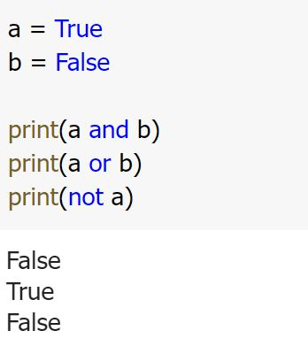

Computer and Programming

What Is Computer?
A computer is an electronic machine that processes information—in other words, an information processor: it takes in raw information (or data) at one end, stores it until it's ready to work on it, chews and crunches it for a bit, then spits out the results at the other end. All these processes have a name. Taking in information is called input, storing information is better known as memory (or storage), chewing information is also known as processing, and spitting out results is called output.
How Does a Computer Work?
A computer processes the input to produce the desired output, but how does a machine outperform the human brain? Conventional computers don't try to mimic the human brain. Instead, they run commands sequentially, with data constantly moving from input and memory to the device's processor. Neuromorphic computers, on the other hand, process data at the same time, making them faster, energy-efficient, and closer to the structure of the human brain.
Overall, a computer works in four steps:
- Input: Input is the data before processing. It comes from the mouse, keyboard, microphone, and other external sensors.
- Storage: The storage is how the computer retains input data. The hard drive is used for long-term and mass data storage while the data set for immediate processing is stored temporarily in the Random Access Memory (RAM).
- Processing: Processing is where input gets transformed into output. The computer's Central Processing Unit (CPU) is its brain. It's responsible for executing instructions and performing mathematical operations on the input data.
- Output: Output is the final result of data processing. It can be anything from images, video, or audio content, even the words you type using a keyboard. You can also receive the output through a printer or a projector instead of directly through your device.

Software?
Software is a set of computer programs and associated documentation and data. This is in contrast to hardware, from which the system is built and which actually performs the work.

System Software
- Operating Systems: Windows, Mac Os, Linux
- Utility Programs: Compression, Virus scanners, Back up
- Software Development:Assemblers, Compilers, Interpreter
Application Software
- Example Application: Microsoft word, PowerPoint, Excel, Photoshop
How Computer store data?
All data stored on storage media – whether that’s hard disk drives (HDDs), solid state drives (SSDs), external hard drives, USB flash drives, SD cards etc – can be converted to a string of bits, otherwise known as binary digits. These binary digits have a value of 1 or 0, and the strings can make up photos, documents, audio and video. A byte is the most common unit of storage and is equal to 8 bits.
All data in a computer is stored as a number. For example, letters become numbers; the Complete Works of Shakespeare is around 1250 pages in print, contains 40 million bits, with one byte per letter, totalling five megabytes (5MB). Photographs are converted to a set of numbers that indicate the location, colour and brightness of each pixel. Whereas convention numbers use ten digits (0, 1, 2, 3, 4, 5, 6, 7, 8, 9), binary numbers use two digits to represent all possible values. The conventions numbers 0-8 translate into binary numbers as: 0, 1, 10, 11, 100, 101, 110, 111 and 1000. With binary numbers, any value can be stored as a series of items which are either true (1) or false (0).
Binary data is primarily stored on the hard disk drive (HDD). The device is made up of a spinning disk (or disks) with magnetic coatings and heads that can both read and write information in the form of magnetic patterns. In addition to hard disk drives, floppy disks and tapes also store data magnetically. Newer laptops, as well as mobile phones, tablets, USB flash drives and SD cards, use solid state (or flash) storage. With this storage medium, the binary numbers are instead stored as a series of electrical charges within the NAND flash chips. Because all data is made up of a string of binary numbers, just one number out of place can cause a file to become corrupt.

How Program Work
The CPU runs instructions using a "fetch-execute" cycle: the CPU gets the first instruction in the sequence, executes it (adding two numbers or whatever), then fetches the next instruction and executes it, and so on. Some of the instructions affect the order that the CPU takes through the instruction sequence. For example, an instruction might direct the CPU to jump back to an earlier point in the instruction sequence (loops are implemented this way), or to skip over the next instruction if a particular condition is true (if-statements are implemented this way).
What is Fetch - Decode - Execute - Cycle

Assembly language
In computer programming, assembly language, often referred to simply as Assembly and commonly abbreviated as ASM or asm, is any low-level programming language with a very strong correspondence between the instructions in the language and the architecture's machine code instructions. Assembly language usually has one statement per machine instruction (1:1), but constants, comments, assembler directives, symbolic labels of, e.g., memory locations, registers, and macros are generally also supported.

High level language
In computer science, a high-level programming language is a programming language with strong abstraction from the details of the computer. In contrast to low-level programming languages, it may use natural language elements, be easier to use, or may automate (or even hide entirely) significant areas of computing systems (e.g. memory management), making the process of developing a program simpler and more understandable than when using a lower-level language. The amount of abstraction provided defines how "high-level" a programming language is.
Programing language

Compiler
Interpreter

Program Disign
Program development cycle

is Programming Development Cycle is a model which is used to represent the stages and tasks that are included orderly in each step to write and put software.
From the initial process of planning, the particular software can be used as a product in long-term usage by implementation and continuation and used as a completed software application. The Programming Development Cycle contains step by steps like analysis which is a requirement.
It also designs the solution and after that validates and implements the design. Then test and document the solution. In the below section, you will understand what are the stages or cycles of Programming Development.
Why development cycle important?
- It provides an effective framework and method to develop software applications.
- It helps in effectively planning before starting the actual development. SDLC allows developers to analyze the requirements.
- It helps in reducing unnecessary costs during development. During the initial phases, developers can estimate the costs and predict costly mistakes.
- It helps in effectively planning before starting the actual development. SDLC allows developers to analyze the requirements.
- It enables developers to design and build high-quality software products. This is because they follow a systematic process that allows them to test the software before it is rolled out.
- It provides a basis when evaluating the effectiveness of the software. This further enhances the software product.
Designing a Program
- Understanding the Program
- Using Design Tools to Create a Model
- Develop Test Data
Pseudocode
In computer science, pseudocode is a plain language description of the steps in an algorithm or another system. Pseudocode often uses structural conventions of a normal programming language, but is intended for human reading rather than machine reading. It typically omits details that are essential for machine understanding of the algorithm, such as variable declarations and language-specific code. The programming language is augmented with natural language description details, where convenient, or with compact mathematical notation. The purpose of using pseudocode is that it is easier for people to understand than conventional programming language code, and that it is an efficient and environment-independent description of the key principles of an algorithm. It is commonly used in textbooks and scientific publications to document algorithms and in planning of software and other algorithms.
FlowChart
A flowchart is a type of diagram that represents a workflow or process. A flowchart can also be defined as a diagrammatic representation of an algorithm, a step-by-step approach to solving a task. The flowchart shows the steps as boxes of various kinds, and their order by connecting the boxes with arrows. This diagrammatic representation illustrates a solution model to a given problem. Flowcharts are used in analyzing, designing, documenting or managing a process or program in various fields.
How FlowChart important?
Flow charts are an important tool for the improvement of processes. By providing a graphical representation, they help project teams to identify the different elements of a process and understand the interrelationships among the various steps.
FlowChart Symbol


IPO or input process output
Computer programs typically perform the following three-step process:
- Input is received.
- Some process is performed on the input.
- Outputis produced.

variables
Variable are: Storage location that have a name, Name-value pairs

Valid Variable Names
1.Case sensitive.
2.Must start with a letter.
3.Underscores allowed in variable names.
4.Not allowed: + -
Reserved Words

Reserved incorrect

Valid Variable Names

data type
Numeric Integer
Basic Data Types
- Numeric
- Integer
- Floating point
- Boolean
- String
Composite Data Types (Later lessons)
- List
- Tuple
- Dictionary
- Set
number
Use numbers directly in your source code
Incorrect to use Numbers
Correct to use Numbers

boolean
A Boolean variable can reference one of two values: True or False. Boolean variables are commonly used as flags
, which indicate whether specific conditions exist.
Hungry = True
Sleepy = False

String
- Represent text
- Surrounded by quotes
*** Strings are start with ' or " and end with ' or "

Python operators
What are operators in python?
Operators are special symbols in Python that carry out arithmetic or logical computation. The value that the operator operates on is called the operand.
Expression Operator And Operand
Arithmetic Operators
Example
Operator Precedence

Comparison Operators

Example
Logical Operators
Example
Bitwise Operators
Assignment Operators

Identity Operators
is and is not are the identity operators in Python. They are used to check if two values (or variables) are located on the same part of the memory. Two variables that are equal does not imply that they are identical.

Example
Membership operators
in and not are the membership operators in Python. They are used to test whether a value or variable is found in a sequence (string, list, tuple, set and dictionary).
In a dictionary we can only test for presence of key, not the value.
Example

input
Input()
input (): This function first takes the input from the user and converts it into a string. The type of the returned object always will be
variable = input(promt)
name input('What is your name? ')
Input Number
We will see how to take integer input in Python. As we know that Python’s built-in input() function always returns a str(string) class object. So for taking integer input we have to type cast those inputs into integers by using Python built-in int() function.Example

Medhod
1. string_value = input('How many hours did you play games? '
hour = int(string_value)
2. hours = int(input("How many hours did you play games? '))
Example

Read Multiple Values From Keyboard
Example

comments
Comments in Python is the inclusion of short descriptions along with the code to increase its readability. A developer uses them to write his or her thought process while writing the code. It explains the basic logic behind why a particular line of code was written. They are just meant for the coders themselves or other developers to understand a piece of code, especially since the Python interpreter completely ignores comments in Python. You can see this in the following example.
*** Messages that use # in front will not be taken into account in the program. ***
Use # put in front
Example